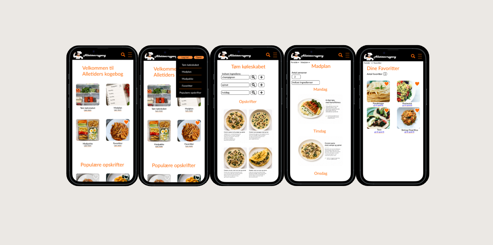
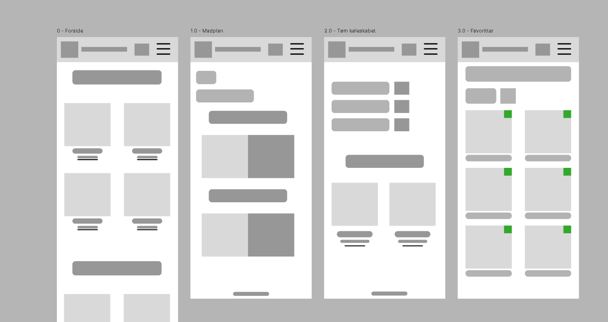
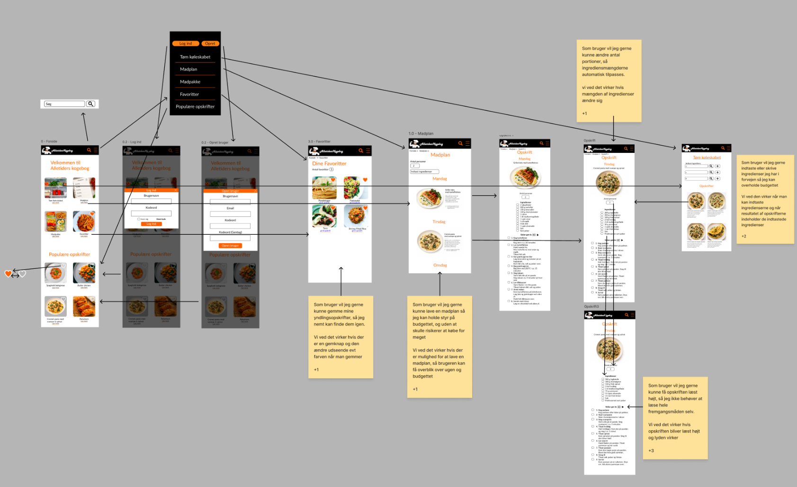

Kogebog

Opgaven
Opgaven gik ud på at Re-design en forældet online kogebog ud fra en fiktiv client
Processen
Vi startede med at se hvad der var vigtigste for clienten, da clienten var en ordblind student og derfor ville gerne holde budgettet nede, finde mere variation, kunne overskue opskrifter, bruge ingredienser hun allerede har og det skulle være let at læse og der skulle være muglihed for oplæsning. Vi research ved selv at navigere rundt på siden for at finde punkter vi kunne fokuserer på at gøre bedre.
Resultatet
Projeket ende med en figma prototype og et detaljeret Customer Journey - efter

